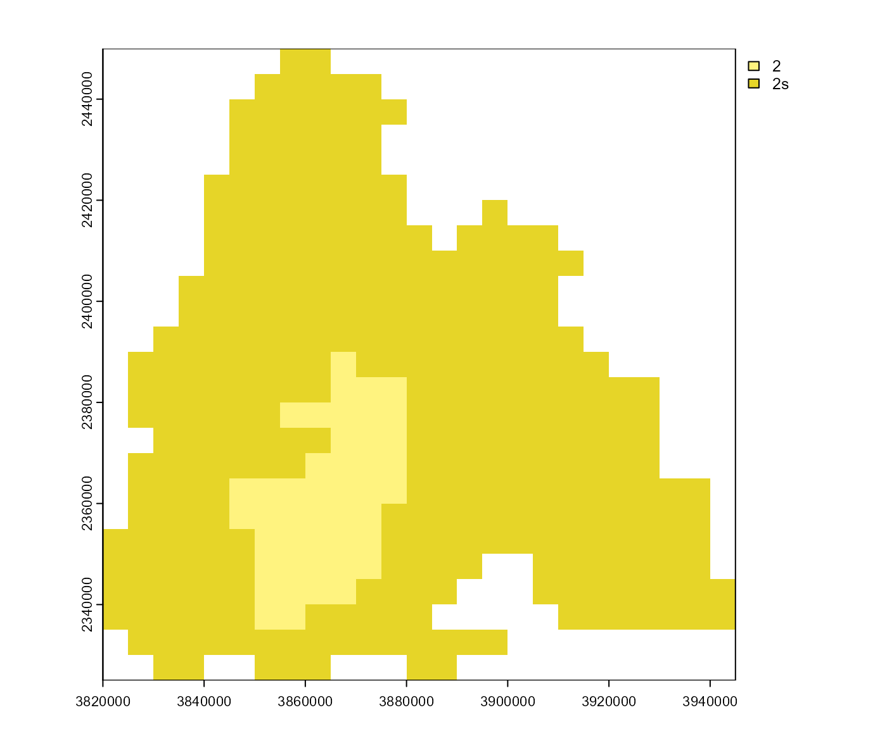

Saves/loads a phenology to/from a path.
Arguments
- pheno
A phenology, calculated with
phenology().- .storage
Path to save/load the phenology.
- .submodels
Which submodels should be saved/loaded.
- .overwrite
Should an existing storage be overwritten?
- .ext
Extension for raster files.
- .quiet
If
TRUE, messages are suppressed.
Value
save_phenology(): Noneload_phenology(): A phenology as a list. Look here to find out how a phenology can be analysed. It is not recommended to access the list elements directly.
Functions
save_phenology(): Saves a phenology to a path.load_phenology(): Loads a phenology from a path.
Examples
# \donttest{
# calculate phenology
p <- phenology('phenips-clim', barrks_data(), .quiet = TRUE)
# choose path to save the phenology
path <- file.path(tempdir(), 'pheno')
# save phenology
save_phenology(p, path, .overwrite = TRUE, .quiet = TRUE)
###
# load phenology from path
p2 <- load_phenology(path, .quiet = TRUE)
# plot generations
gens <- get_generations_rst(p2)
terra::plot(gens)

# }